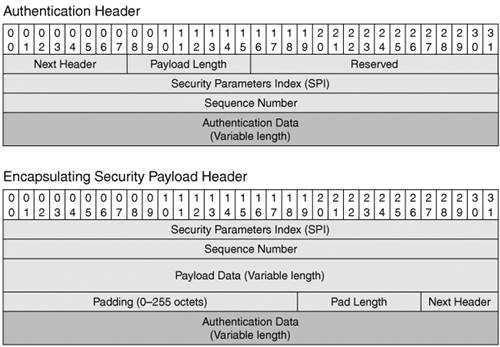
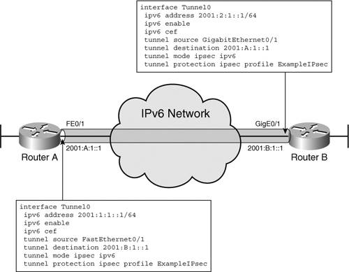
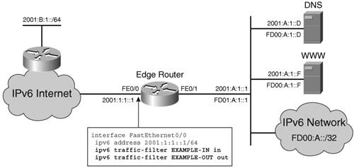
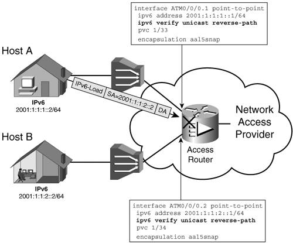

Tools Available for Securing IPv6 NetworksThe threat analysis leads to the conclusion that more similarities than differences exist between IPv4 and IPv6 as far as security is concerned. Until end-to-end IPsec and a reliable key-distribution protocol is consistently deployed for IPv6, the proven IPv4 security best practices and tools should be used to secure the IPv6 networks, too. It is thus important to evaluate the IPv6 readiness of these tools. Although perimeter security is critical, security policies and tools are implemented and used in multiple parts of the network. IPsec for IPv6IPsec is the networking community's answer to the need for secured communication. It was defined in RFC 2401, and conceptually it operates under the same principles in IPv4 and in IPv6. IPsec ConceptsThe implementation of IPsec has two elements:
You can use AH by itself (if regulations do not allow traffic to be encrypted and the use of an ESP). There are two modes of securing the traffic between two hosts:
In both cases, the process of securing the communication is started by establishing a security association (SA), which is a unidirectional logical connection that encompasses all the participating elements. These elements include the authentication algorithm, authentication key, encryption algorithm, encryption key, and so on. These parameters are negotiated between the two participants in the SA. In transport mode, a host clearly has to establish multiple SAs. It can differentiate between them by using a Security Parameters Index (SPI). These two IDs, the SA and the SPI, are referenced in every IPsec-protected packet. In IPv6, two EHs were defined to support IPsec. Figure 9-3 shows their format. Figure 9-3. Authentication and Encapsulating Security Payload EHsThe sequence number is a variable that is initialized to zero when the SA is set up. It ticks up with every packet sent, and that helps keep track of out-of-sequence packets and of played-back packets. Note The security key is one important element needed for authentication and encryption. Work is still being done to identify a reliable protocol for key distribution. Cisco IOS routers use Internet Security Association and Key Management Protocol (ISAKMP; IKEv1), as defined in RFC 2408, to provide key management and authentication. However, without a generally adopted authentication scheme, its use is limited in the public domain. Manually configured keys are always an option, but they pose provisioning and management challenges. Using IPv4 IPsec to Secure IPv6 TunnelsIPsec is frequently deployed in today's IPv4 networks to secure communication over VPNs. It is used for access VPNs as well as inter-site VPNs. IPv6 transition mechanisms can leverage such an infrastructure to achieve a certain level of security, even in the absence of IPv6 IPsec. Remote IPv4 hosts access private networks by establishing an encrypted access VPN to a gateway set up for these purposes. If the same host is enabled for IPv6, it can thread an IPv6 tunnel through this IPv4-secured communication channel. Because the IPv4 VPN places the remote host on the private network, a natural IPv6 tunnel choice is the Intra-Site Automatic Tunnel Addressing Protocol (ISATAP), which is suitable for intra-site communication. In practice, however, you can use any type of IPv6 tunnel as long as it is supported by the host and a gateway is set up for it inside the private network. The configurations for the IPv4 access VPN and the IPv6 tunnel are completely independent. The IPv4 VPN configuration is beyond the scope of this book, but there are plenty of examples in references dedicated to this topic (refer, for example, to IPSec VPN Design by Vijay Bollapragada, et al.). Chapter 3, "Delivering IPv6 Unicast Services," contains router configuration examples for the various IPv6 tunnel types. From a host perspective, the tunnel configuration depends on the particular operating system used. For example, if ISATAP is used in the topology shown in Figure 3-11 (Chapter 3) and the host is running Windows XP, the host tunnel configuration would be just one line entered in the command window: netsh interface ipv6 isatap set router 200.13.13.1 In this example, the IPv4 VPN initiated by the host is terminated at the edge of the private network not identified in Figure 3-11. Note The IPv4 MTU of the host is usually lowered for the IPv4 VPN. The same should be done for the IPv6 MTU to avoid fragmentation. The "Topologies Examples" section of Chapter 7 shows an example of how to secure the IPv6 traffic between two routers by setting up an IPv6 tunnel through an inter-site IPv4 IPsec VPN. Although the example discusses the case of a manually configured tunnel, the same concept applies to any IPv6 tunnel type, static or dynamic. The example uses a static crypto map, which implies the fact that the routers have fixed IPv4 addresses and are using shared keys. You can implement dynamic maps when the routers acquire their IPv4 addresses dynamically, as in the case of remote sites provisioned every time they connect to the network. Securing Routerto-Router Communication with IPv6 IPsecUntil IPv6 IPsec is extensively and uniformly deployed as suggested by RFC 2460, it can still be used on a smaller scale. IPv6 IPsec can be leveraged to secure both the control and the data plane between two routers. The "OSPFv3" section of Chapter 4, "IPv6 Routing Protocols," shows an example of using IPsec (with static key) to secure a routing protocol. Cisco IOS software also offers a mechanism for securing the data traffic between two routers through a new type of tunnel that employs IPv6 IPsec. IKEv1 is used for key management. Figure 9-4 shows a topology in which this feature is used between Routers A and B. Figure 9-4. Using IPv6 IPsec to Secure the Data Exchange Between Two RoutersExcept for the tunnel itself, the configuration of this feature is similar to that used in securing the communication between two routers with IPv4 IPsec. On Router A, the steps to configure the IPsec portion are as follows:
Figure 9-4 shows the tunnel interface configuration for each router. The operation of this feature is similar to the IPv4 one, so the same troubleshooting commands and methods apply in the case of IPv6 IPsec (refer to IPSec VPN Design by V. Bollapragada, et al.). This is a useful tool to secure the inter-site communication. Access Control ListsAccess control lists have proven themselves to be versatile instruments in identifying targeted traffic for further or particular processing or for filtering. For the most part, the IPv6 ACLs are similar to the IPv4 ACLs, but a few differences are worth pointing out:
The differences between the IPv4 and IPv6 ACLs stem from the IPv6 protocol specificities that have been discussed throughout this book. Extended IPv6 ACLs and Stateful FilteringExtended ACLs are supported for IPv6 in a similar way to IPv4. Numbered ACLs are not supported for IPv6. Additional parameters are available to deal with some of the IPv6 protocol and operational specifics listed earlier. Example 9-1. Options Available in Cisco IOS Command Line When Configuring an IPv6 Access List
The implicit rules at the end of the IPv6 ACLs reflect the operational importance of ND. They permit the neighbor advertisement and neighbor solicitation ICMP traffic, as shown here: permit icmp any any nd-na permit icmp any any nd-ns deny ipv6 any any Similar to IPv4, if the packet does not meet any of the matching criteria, it is dropped by default. Note The implicit rules for the IPv6 ACLs do not take into account the fact that IPv6 hosts need to do PMTU Discovery. To allow the PMTU Discovery process to work through the filters, the ICMPv6 Type 2 (Packet Too Big) packets have to be allowed through in both directions. Stateful filtering is supported with IPv6 ACLs, too. The reflect option enables an ACL's permit statement to generate an access entry for the return packets of a flow it allowed through (refer to the book Implementing Cisco IPv6 Networks by Regis Desmeules). This dynamic access entry can be in turn applied to other ACLs with the use of the keyword evaluate, as shown in Example 9-2. Example 9-2. Reflexive Access List Configuration Example
Based on the ACL called IN, any www TCP connection request that comes inbound interface FastEthernet6/1.10 for the server 2001:2::1 will be allowed through. For each connection, a dynamic permit entry is built under REF for the reply packet coming from the server. REF is included in the ACL called OUT, which will apply the return path dynamic entry outbound on the interface. The reflexive ACL entries are active for a period of time (3 minutes by default) or until a FIN is detected for a TCP session. Note The implicit deny any any does not apply at the end of reflexive ACLs. Multiple evaluate entries are allowed per ACL. Time-based ACLs can be created for IPv6 in the same fashion as for IPv4. They identify ACLs that are valid only for certain time intervals. IPv6 ACLs and FragmentationWhen IP packets are fragmented, not all the fragments contain the information relevant to the ACL matching process. In IPv4, most of the layer 3 and layer 4 information is available in the first fragment, so the ACL can perform a full match on it. The noninitial fragments typically would not contain the layer 4 information, so at most a match can be done on the layer 3 header. Because a host cannot use the noninitial fragments if the first fragment was filtered, it is safe to apply an ACL statement that contains layer 4 criteria only on the first fragment. The keyword fragment in an IPv4 ACL indicates that after the layer 3 information is checked, all noninitial fragments are permitted or pushed through the subsequent ACL line depending on whether the statement is a permit or a deny (refer to the Cisco document "Access Control Lists and IP Fragments" at Cisco.com). In IPv6, on the other hand, the router has to first parse through several Next headers before reaching the Fragmentation header to extract the information on the fragment. Then it must parse through some more EHs to get to the upper-layer information. Therefore, the first fragment might not contain all the necessary information. In IPv6 ACLs, the keyword fragment has the same meaning as in IPv4 with the exception that the filter applies to all noninitial fragments as well if the upper-layer protocol cannot be determined from the first fragment. Note IPv6 supports a new keyword, undetermined-transport, for matching IPv6 packets for which the layer 4 information could not be extracted. Firewalls can handle fragmented packets comprehensively. They can track all fragments by source address, destination address, protocol, and IP ID. This allows both the PIX and the Cisco IOS Firewall to apply the filtering policies to all fragments without any of the assumptions mentioned earlier. IPv6 Access List ExampleThe concepts presented in this section of the chapter are captured in a practical example for the topology shown in Figure 9-5. Figure 9-5. Topology for the Access List ExampleThe edge router (ER) has to implement the following policies with the help of ACLs:
These conditions are met with the ACL and interface configuration shown in Example 9-3. Example 9-3. Access List Configuration Implementing the Policies Listed Above
The output of show ipv6 access-list summarizes the filtering policies configured on the router. Firewall FunctionsFirewalls have been mentioned as powerful tools used to enforce security policies at the edge of the network. Figure 9-1 depicts the most commonly deployed security topology in IPv4, with the focus on the firewall. Such perimeter defenses will most likely be used in IPv6 networks, too. Two types of firewalls are offered through Cisco products: Cisco IOS Firewall features and the PIX family of products. Both these options are widely used in IPv4 networks, and now they support IPv6, too. Cisco IOS FirewallThe Cisco IOS Firewall capabilities are often used in current IPv4 deployments. Many of these capabilities have been extended to support IPv6 (refer to the Cisco document "Implementing Security for IPv6" at Cisco.com):
Note Cisco IOS Intrusion Detection System (IDS) does not support IPv6 at the time of this writing. Cisco IOS Firewall can perform these firewall features for both IPv4 and IPv6 at the same time and on the same interfaces. Cisco IOS Firewall feature configuration involves several considerations. You can modify various parameters that are used for decision making in the inspection process in the global configuration, as shown in Example 9-4. Example 9-4. Cisco IOS Firewall Feature Configuration Options
Note It is also important to enable audit capabilities of the router that would track the inspect process. The feature is enabled with the global configuration command ipv6 inspect audit-trail. You can define inspection policies to include the various protocols recognized. The policy defined in Example 9-5 is named FW-EXAMPLE, and it includes inspection of all supported protocols: FTP, UDP, TCP and ICMP. Example 9-5. Security Policy Configuration Example
After it has been defined, the policy is applied inbound or outbound to the interfaces of interest, as shown in Example 9-6. Example 9-6. Applying Security Policies to Router Interfaces
To troubleshoot the inspection process, you can turn on the corresponding debug. In Example 9-7, the router is inspecting ICMPv6 traffic. Example 9-7. Sample Debug of the Packet-Inspection Process
The other important tool used to properly inspect the traffic is the virtual reassembly process, which has to be enabled on the interface, as shown in Example 9-8. Example 9-8. Enabling Virtual Reassembly on a Router Interface
Example 9-8 captures the output of the show virtual-reassembly command for the interface of interest. It lists the number of packets processed and the number of fragments that are being processed at the time. PIX FirewallThe PIX Firewall is a device dedicated to implementing perimeter security policies. It is widely deployed in existent IPv4 networks, so it is important to understand its IPv6 capabilities. PIX Firewalls will most likely be used to secure IPv6 services, too. PIX software release 7.0 is the first to support IPv6. It can perform security checks of IPv6 headers and EHs, multiple protocol (ICMP, UDP, TCP, SMTP, and HTTP) inspection, and through the adaptive security algorithm (ASA) it can perform stateful application inspection. For device-management purposes, the HTTP, SSH, and Telnet clients were also modified to support IPv6. Note In the PIX 7.0 software release, the Cisco Firewall does not support multicast except for what is necessary for autoconfiguration and ND. Multicast security can be implemented on the edge routers. The IPv6 instructions for the PIX are Cisco IOS Firewall based, so they match the commands described in the "Access Lists" section of this chapter. Authentication, Authorization, and AccountingThe authentication, authorization, and accounting (AAA) functions are critical in any deployment. AAA is used to manage users and devices or to collect service-usage information for billing. At the same time, AAA is a security tool, too. No large-scale IPv6 deployment could be rolled out without available AAA supporting IPv6. In the first phase of the Cisco IPv6 implementation, the IPv6 AAA features were implemented by extending some of the vendor-specific attributes (VSAs) used for IPv4. Some of these VSAs have counterpart attributes that are RFC 3162 compliant and implemented for RADIUS. Table 9-2 summarizes the IPv6 RADIUS attributes and VSAs, and includes a brief description of their scope (refer to the Cisco document "Cisco IOS IPv6 Configuration Library" at Cisco.com).
The configuration of these attributes is straightforward. Example 9-9 shows a user's profile configured on the RADIUS servers. When the user connects to the NAS via PPP, it is provided with the global prefix 2001:A:1::/64. An ACL will be applied outbound to stop any traffic sourced from the unique-local addresses used internally. Example 9-9. RADIUS Server User Profile Example
These AAA features are important, particularly in the case of broadband deployments where large numbers of users have to be managed. Note The RADIUS server must be IPv6 aware to be able to handle some of the IPv6-specific attributes. The other option for implementing the AAA functions is to use Terminal Access Controller Access Control System Plus (TACACS+). Despite being more versatile than RADIUS, TACACS+ is not as commonly deployed because it is more resource intensive (requires more processing and memory). At the time of this writing, TACACS+ is not implemented for IPv6 on Cisco IOS software. Unicast Reverse Path ForwardingSecurity policies that implement source address verification are important in eliminating spoofing attacks. These policies prevent spoofing of the source addresses at the prefix level. They should be implemented as close as possible to the location of unsecured devices and hosts. An access network is a typical scenario where such policies can be applied. The service provider operating the network wants to make sure that its customers do not attempt to spoof an address on a different prefix from their own. Figure 9-6 shows the case where Host A is stopped from sending traffic using the address of Host B as a source address. Figure 9-6. Securing an Access Network from Internally Sourced Spoofing AttacksThe intent is to verify at the access router that customer packets received on an interface have a source address that belongs to the prefixes known (based on the routing table) to be out that interface. Access lists can, of course, be applied inbound to filter the traffic accordingly; however, this can involve management and provisioning burdens. Another way to achieve the same goal in a dynamic manner is to implement for unicast a mechanism similar to Reverse Path Forwarding (RPF) used in multicast forwarding. Unicast Reverse Path Forwarding (uRPF) checks the routing information to verify that the prefix of an inbound packet's source address is known to be reachable out the interface it was received on. The actual reverse lookup is done in the Cisco Express Forwarding (CEF) forwarding table. Note All equal-cost paths are considered valid by the reverse lookup. If the reverse path calculated for the source address does not match the interface on which the packet was received or the source address cannot be identified (malformed source address), the packet is dropped. This feature implements dynamically the functions of an inbound ACL. It is currently available in Cisco IOS software for both IPv4 and IPv6, and it represents a simple one-line interface configuration, as shown on Figure 9-6. If an ACL is designated at the end of the command ipv6 verify unicast reverse-path, the router applies it to the packet that failed the RPF check. The advantage of using the ACL option is that the ACL can be configured to log the matches and provide information that can be used to track policy violators. Example 9-10. uRPF Configuration Example
The ACL can simply be configured to permit all traffic and log it, in which case the violators of uRPF are let through but the violation is logged. Note The uRPF, as discussed so far, operates in what is called a strict mode. In strict mode, the router verifies that the source address exists in the Forwarding Information Base (FIB) and that it is also known to be reachable out its interface that received the packet. The verification requirements can be relaxed, leading to a "loose mode" uRPF where the router only verifies a source's reachability by checking for its existence in the FIB table and not the interface it belongs to. The Cisco IOS command to enable the feature is ipv6 verify unicast reachable-via <reachability-options>. Depending on platform, the performance impact of enabling these features should be considered. Protecting the Control Plane with Rate LimitingTo defend the network infrastructure from attacks, it is important to protect the control-plane resources of the network elements. Router resources (memory/CPU) on the line card or the route processor can be depleted by being overwhelmed with traffic that appears to be important to the control plane. Under such circumstances, the critical processes that maintain the router's integration in the network can be severely impacted. This type of threat has been identified in the case of IPv4. IPv6 introduces new venues to attack a router's control plane, such as flooding it with router solicitation traffic or packets with the routing header. Note A router can be configured using the no ipv6 source-route command to stop processing packets that contain the source routing header. At first, IPv6 services are likely to be considered of lower priority than the existent revenue-generating IPv4 services. This means that a router's control plane has to be particularly protected against IPv6 threats. Certain types of traffic can be intelligently filtered out, but others cannot be identified a priori as a potential threat. In some of these cases, the attack is identified simply by the high rate of traffic received by the router. One defense against these flooding attacks is to limit that rate of traffic accepted by the router and thus preserve a minimum amount of CPU and memory for the control-plane operation. The implementation of such mitigation plans depends on platform. Some platforms incorporate rate-limiting protection mechanisms in their default behavior, whereas others need to be configured for it. Some implement it in hardware, whereas others configure it in software. Cisco IOS command line offers a dedicated interface for configuring traffic rate limiting specifically for protecting a router's control plane, as shown here: Router(config)#control-plane Router(config-cp)#service-policy input <policy-name> This interface leverages the standard QoS tools. A service policy has to be defined based on the guidelines discussed in Chapter 5, "Implementing QoS." |